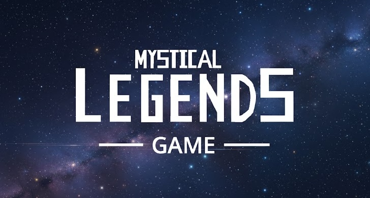

February 14, 2026
With the continuation of the Mystical Legends Game, we've decided to share a small snippit of the character menu and main menu in progress for the first installation of the Mystical Legends Game series.
Check out the game with this following link.
The game is built on a program called Turbowarp inspired from Scratch with many rudimentary features but additional tools to add complex functionalities and interactions outside the project. The game has be incepted for a while since my teens so that is the reason I am still using such a simple (but still sophisticated) game engine. Future projects, with the same game assets will be used to produce a (work in progress) polished game that won't be quite the same as this upcoming Mystical Legends Game.
This showcase is to also get development out there and show that the game is actively in development and that I have proof of my skillset especially for my first large game project.
- Kenny Calhoun, The MLG Developer